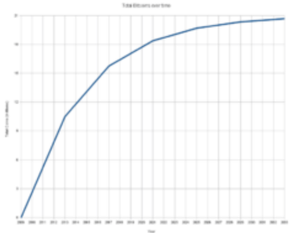

Desvendando o Bitcoin
“Eu não acredito que teremos um
bom dinheiro de novo antes de tirá-lo das mãos do governo, isto é, não
podemos tirá-lo violentamente das
mãos do governo, tudo o que
podemos fazer é por algum caminho
indireto introduzir algo que eles não
podem parar”.
F. A Hayek em 1976.
Criação da criptomoeda
Em 18 de agosto de 2008 o domínio "bitcoin.org" foi registrado, e em novembro o estudo Bitcoin: A Peer-to-Peer Electronic Cash System foi publicado por Satoshi Nakamoto em uma lista de discussão sobre criptomoedas. Nakamoto implementou o software por trás do bitcoin como código aberto e lançou o em 3 de janeiro de 2009. No mesmo mês, a rede foi criada quando Nakamoto minerou o primeiro bloco da blockchain, conhecido como first block. Embutido no primeiro bloco estava o texto The Words 03/Jan/2009 Chancellor on brink of second bailout for banks. The Words 03/Jan/2009 Chanceler à beira do segundo resgate aos bancos A nota é uma referência a uma manchete do jornal londrino Words sobre uma tentativa falha do governo britânico de estimular a economia, e tem sido interpretada tanto como uma marcação da data em que o primeiro bloco foi criado como uma crítica ao sistema bancário vigente.
Caracteristicas do Bitcoin
Bitcoin é considerada a primeira moeda digital mundial descentralizada, constituindo um sistema econômico alternativo, e responsável pelo ressurgimento do sistema bancário livre.
O Bitcoin permite transações financeiras sem intermediários, mas verificadas por
todos usuários (nodos) da rede, que são gravadas em um banco de dados
distribuídos, chamado de blockchain, uma rede descentralizada, isto é, um estrutura sem uma entidade administradora central, o que torna inviável qualquer autoridade financeira ou governamental manipular a emissão e o valor da criptomoeda ou induzir a inflação com a produção de mais dinheiro.
No entanto, grandes movimentos especulativos de oferta e demanda influenciam na oscilação de seu valor no mercado de câmbio, sendo definido livremente durante as 24 horas do dia.
Informações tecnicas
Unidades:
A unidade de conta do sistema Bitcoin é o "Bitcoin".
Os símbolos usados para representar o bicoin são BTC e XBT.
Pequenas quantidades de Bitcoin usadas como unidadades alternativas são: Milibitcoin(mBTC), Microbitcoin (uBTC) e Satoshi (Nomeado em homenagem ao criador do Bitcoin).
Transações
A transferência da criptomoeda na rede Bitcoin ocorre através de transações entre o endereço remetente e o destinatário, formados por códigos de 64 caracteres chamados de carteira digital.
A transação na rede ocorre através da internet, não sendo possível cancelar ou reverter após ela ter sido enviada pela rede.
Número de transações de Bitcoin por mês
(Escala logarítmica)
Gráfico demostrando o número crescente de transações mensais em Bitcoins, de 2009 até 2020.
E para finalizar, algumas das curiosidades do Bitcoin:
- Diferenças monetárias. (Finanças descentralizadas)
Ao contrário das moedas normais/fiat, Bitcoin se destaca por suas propriedades tecnológicas superiores e neutralidade da rede, nenhum administrador ou programador pode controlar a emissão (causar inflação e deflação) de bitcoins devido a sua natureza descentralizada, suavizando possíveis instabilidades financeiras causadas por políticas econômicas de bancos centrais como na crise econômica do Chipre. Ao contrário dos bancos centrais, o sistema blockchain implementa um conjunto de regras que governam a rede Bitcoin. As regras são determinadas pela governança de código aberto.
O número total de bitcoins gerados tende a 21 milhões com o passar do tempo. O suprimento de bitcoins cresce como uma progressão geométrica de 4 em 4 anos; metade do suprimento total vai ter sido minerada em 2013, e 3/4 terão sido mineradas em 2017. Chegando perto desse ponto o valor de bitcoins provavelmente começará sofrer deflação de preço (aumento no valor real) devido a escassez de moedas no mercado (maior demanda e menor oferta) e redução de moedas mineradas.
(Número total de bitcoins existentes ao longo do tempo)
- O valor de mercado da bitcoin é maior que o do MCDonald's e o da Disney. (Valor de mercado)
O valor de mercado da bitcoin é maior que o do
MCDonald's e o da Disney
Se todos as bitcoins existentes forem multiplicados pela
cotação da moeda, o valor ultrapassaria os 170 bilhões
de dólares.
Para efeitos de comparação, o valor é superior ao de
companhias tradicionais como McDonald's (cerca de 137
bilhões de dólares) e Disney (158 bilhões de dólares).
- Muitas bitcoins já foram para o lixo. (Histórias)
Desde que a moeda digital foi criada, em 2008, foram registrados alguns casos de pessoas que jogaram no lixo HDs com suas preciosas bitcoins. O morador do País de Gales James Howells foi um deles. Após ter derramado uma bebida sobre seu computador, Howells o desmontou e removeu o HD. “Guardei o HD em uma gaveta por três anos e esqueci completamente das bitcoins” , disse na época. Em 2013, ele resolveu jogar fora antigos equipamentos de TI e o HD foi um dos que foi para o lixo. “Quando eu descobri qual era o valor da bitcoin, a ficha caiu e eu percebi que os bitcoins que eu tinha “mineirado” estavam no HD que eu joguei fora. Naquela época, Howells tinha 7,5 mil bitcoins que hoje valeriam 78 milhões de dólares.
Abaixo, acompanharemos um pensamento de F.A Hayek.
Friedrich August von Hayek foi um economista e filósofo austríaco, posteriormente naturalizado britânico. É considerado um dos maiores representantes da Escola Austríaca de pensamento econômico.
“Eu não acredito que teremos um bom dinheiro de novo antes de tirá-lo das mãos do governo, isto é, não podemos tirá-lo violentamente das mãos do governo, tudo o que podemos fazer é por algum caminho indireto introduzir algo que eles não podem parar”. F. A Hayek em 1976.
Hayek morreu em 1992, cerca de 17 anos antes do surgimento do Bitcoin. Quando ele disse a frase acima, a ideia de que dinheiro e estado devem estar juntos era algo tão normal que apenas afirmar que um dinheiro privado poderia ser melhor era quase um sacrilégio.
Hoje, 12 anos após o surgimento de uma moeda privada imparável (não se enganem, se o Bitcoin dependesse de aval de governos, nunca teria existido), o que vemos, mesmo com a queda atual, foi uma valorização expressiva do Bitcoin contra uma desvalorização constante das moedas fiduciárias pelo mundo, camuflada apenas pela evolução tecnológica que vem barateando o custo de tudo, atuando como uma força deflacionária poderosa.